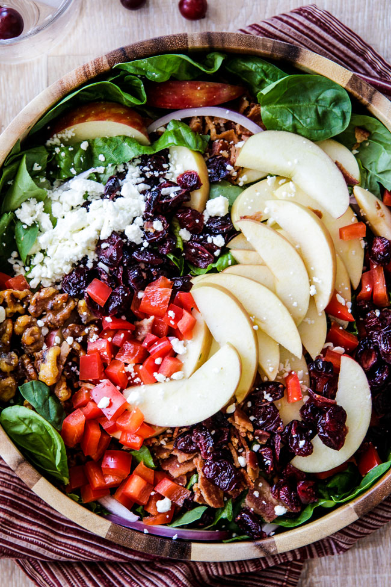

Chicken Apple Walnut Salad

Description
This green salad is both refreshing and hearty with apples, cranberries, walnuts, chicken, and a delicious red wine vinaigrette.
This recipe is easily modified to taste. Add your favorite veggies, proteins, cheese, or even fruit!
Ingredients
- Spring mix
- Apples
- Red onion
- Gorgonzola cheese
- Walnuts (optionally, candied)
- Chicken breast
- Dried cranberries
- Italian seasoning
- Red wine vinegar
- Garlic
- Olive oil
- Dijon mustard
Steps
- Season chicken breast with salt, pepper, and Italian seasoning. Bake in the oven at 425F for 30 minutes, flipping halfway through.
- While chicken is cooking, chop red onion, apples, and walnuts into bite-sized pieces. Finely mince garlic.
- Combine red wine vinegar, olive oil, italian seasoning, minced garlic, and dijon mustard to make the vinaigrette.
Season to taste with salt and pepper.
- After chicken has cooked and cooled, slice into bite-sized pieces.
- Combine spring mix, apple, red onion, gorgonzola, walnuts, chicken, and cranberries in large bowl. Dress with vinaigrette.
- Enjoy!
Home